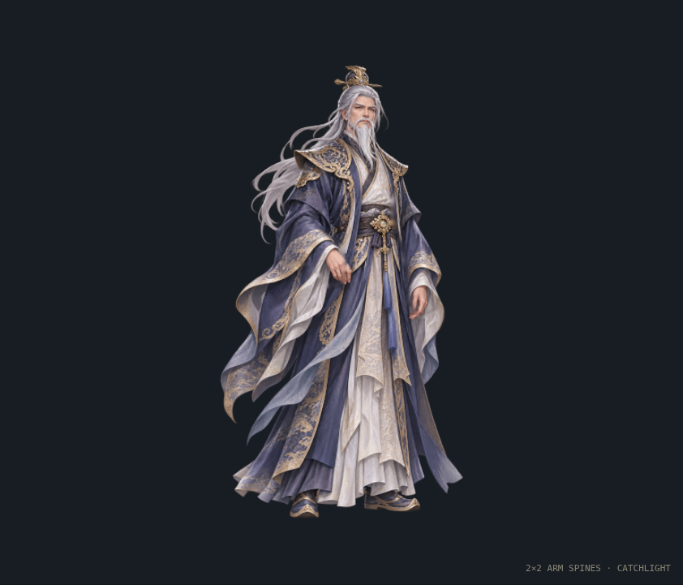
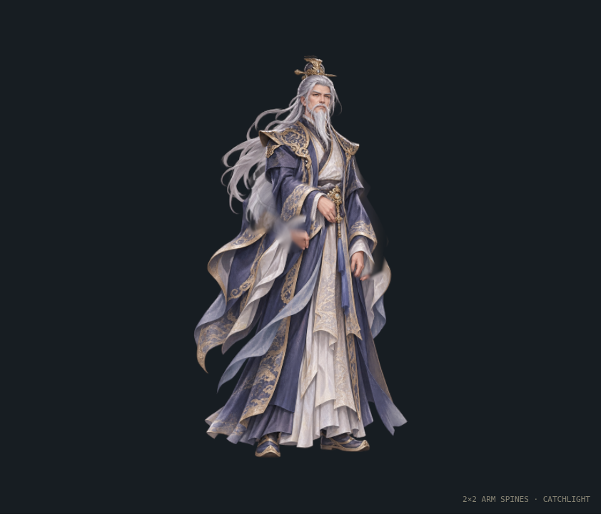
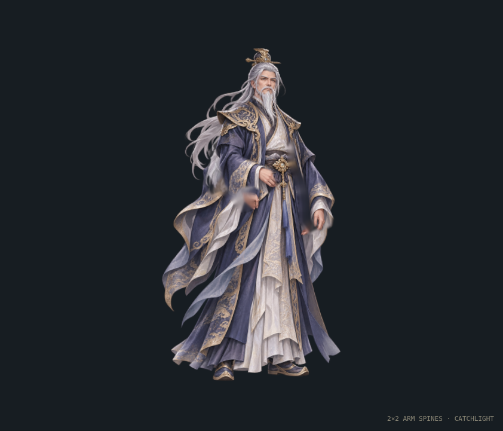
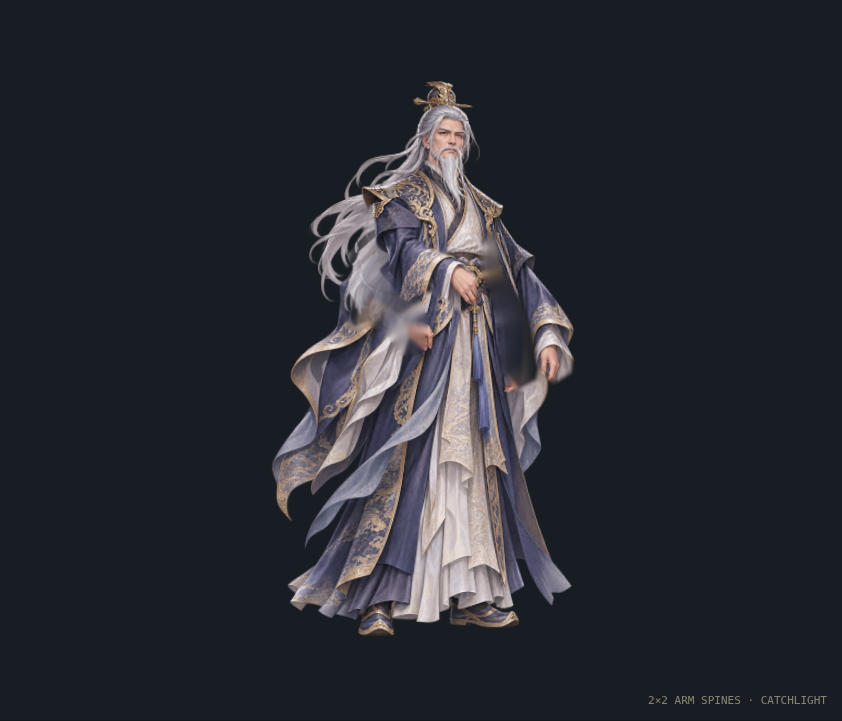
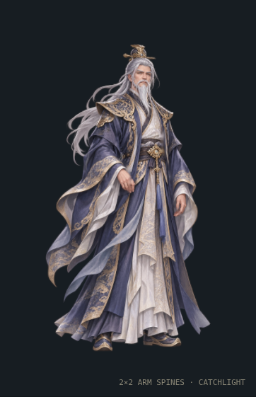
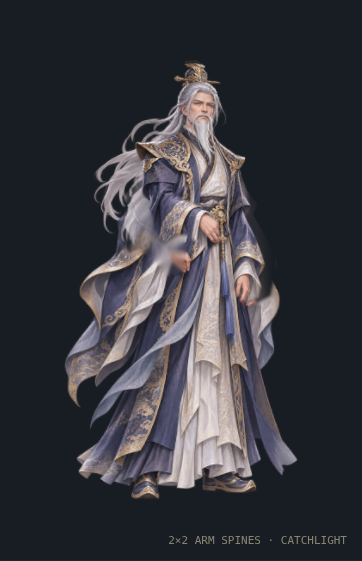
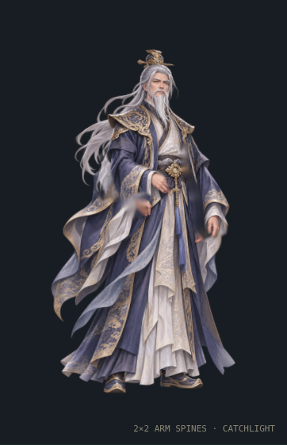
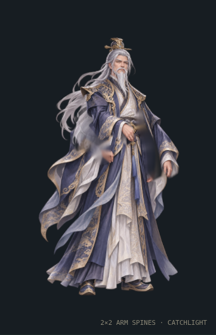

打开 W147 真实可交互角色查看 W146 旧胸像原始浏览器 QA 报告原作者 Catchlight 演示
《丹道》W147｜全身人物，真正的袖臂骨骼
新全身原画（1024×1536）经 See-through 自动分层、Catchlight 双节骨骼绑定。分别支持“接丹”“端详”“评丹”“回应”等实验动作。录制的是 Chrome 真实渲染画布，而非视频生成模型。
视觉验收：尚未通过。 人物比例改善，手臂可以真正抬起，但手掌未独立绑定，袖口、肩肘连接与面部动作还不够自然。请以实际录像评价，不以参数数量代替效果。
实际浏览器视频

桌面端 1440×900 动作对照




手机 390×844 动作对照




工程审计：本版 10 个参数，其中 4 个为两条袖臂的 spine 关节弯曲参数。浏览器自动测试没有报告 JS 错误和横向溢出；不代表 GPU FPS、材质自然度或完整动画质量通过。
此页面属于 W147 独立实验。正式炼丹炉、丹方、经济、数据库与玩家存档未修改。